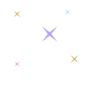

Environment & Technical Artist Toronto
Brennan Shepherd
I build worlds that feel like songs.
Stylized environments, sculpted architecture, and procedural worldbuilding in Unreal Engine and Houdini.
Worldbuilding · Materials · Procedural Art


Portfolio paths
Explore the work.
Environments first. The systems are just beneath the surface.
 Featured case study · Unreal Engine 5.8Faraway MotherTextile architecture, the Heart Gate, and a procedural landscape folded into itself.
Featured case study · Unreal Engine 5.8Faraway MotherTextile architecture, the Heart Gate, and a procedural landscape folded into itself.